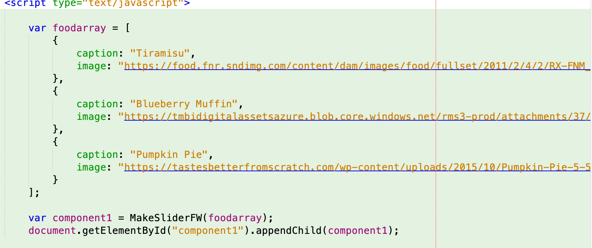
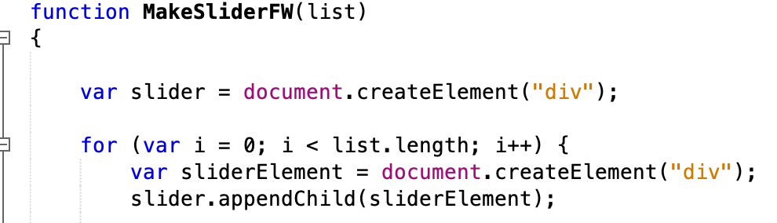
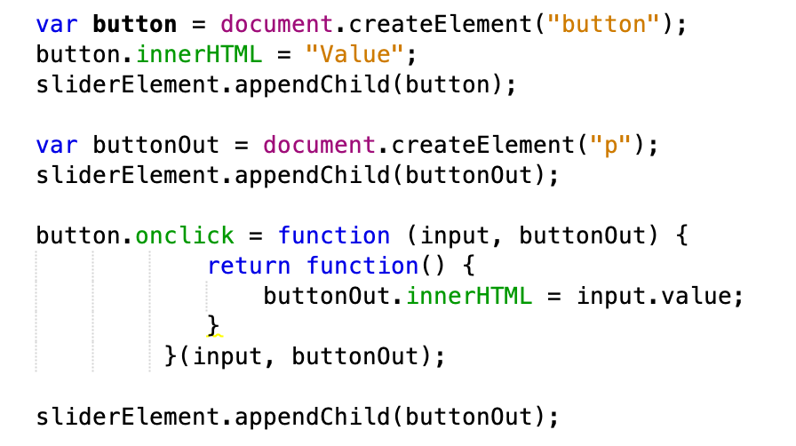

The Range Slider is simple. It's a long slider that displays the current value of where in respect to the select the user's selection is placed.
Instead of displaying the slider value immediately I wanted the user to be able to click and discover what there value was.
Both components enable the user to rate the food listed above.
Drag the slider the your desired path on the x-axis and then click the value button to see what your rating is for the dessert.
Photos and Description
The first piece of code I had to understand to write was a simple array and component function to pass my information to my Javascript file. Although it seems like an easy task. I was behind and implemented this incorrectly. With the help of Professor this was the first step into finding the correct answer. Thus my first capture, constructing a food array with the desired data values. Which is simple defining the elements and then setting the data points. One the array is defined create the variable component and pass the food array. Then append it.
The second piece of code I had to understand to write was the beginning function of my MakeSlider. First and foremost, we must pass a list as parameter in the function. With that being said, I also used a for loop to iterate through variables and elements I created.
The third piece of code I had to understand to write was my button function. Honestly one of the hardest parts of the assignment. In plain terms. I first had to create the button element. Then append it to the parent class. On top of that I have to create an onclick function that grabbed every sliders value and displayed it to the user.